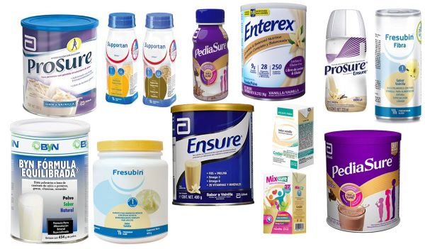
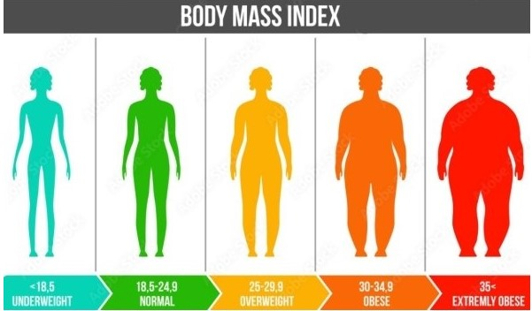

La nutrición deportiva está enfocada, especialmente, hacia personas que practican deportes de alta intensidad. Que además realizan esfuerzos prolongados en el tiempo, como en el caso de los deportes de resistencia. La base de la nutrición deportista radica en la búsqueda de una adecuada ingesta de hidratos de carbono, proteínas e hidratación de la forma más equilibrada posible.
Uno de los elementos fundamentales en la vida de todos es la nutrición, más aún en aquellos de edad avanzada. El rol que la nutrición juega en el proceso de envejecimiento ha sido motivo de mucho debate. Asimismo, el efecto de la edad en la manera como se alimenta un individuo es un área muy discutida ya que el adulto mayor constituye un grupo donde se encuentran presentes enfermedades que pueden alterar la manera de alimentarse de un individuo, y cambiar la respuesta del organismo a distintos nutrientes.
Nuestro rol es realizar una evaluación nutricional y luego la dietoterapia, es decir, diseñar para cada paciente una dieta -dependiendo del estado nutricional y de la patología- con una función terapéutica. El objetivo es lograr curar alguna alteración o síndrome con dieta y ejercicio
